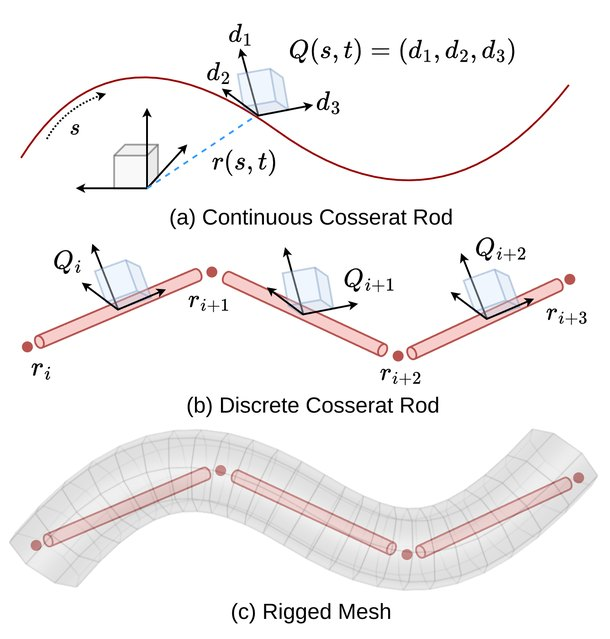
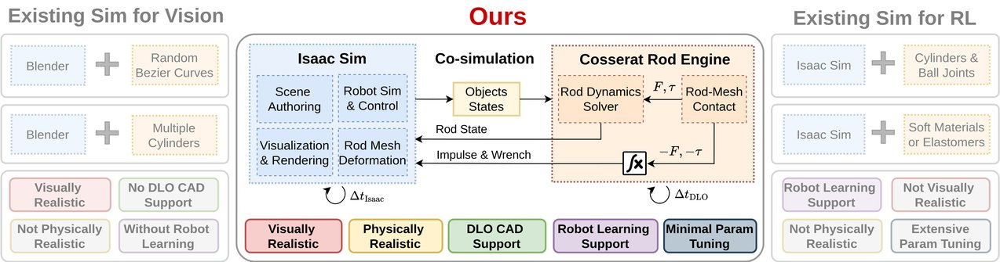
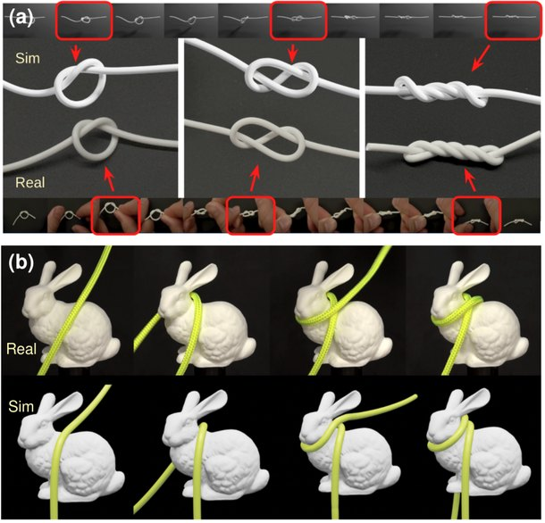
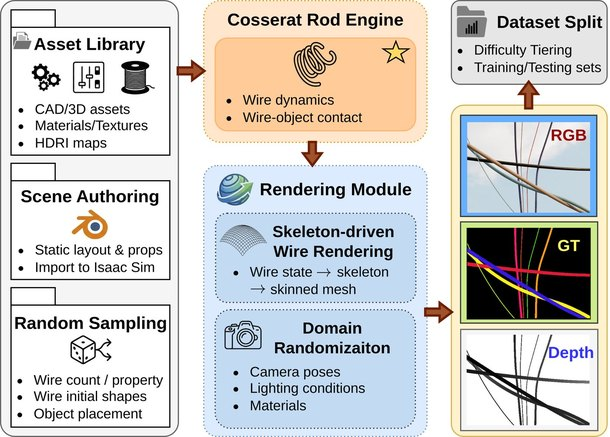
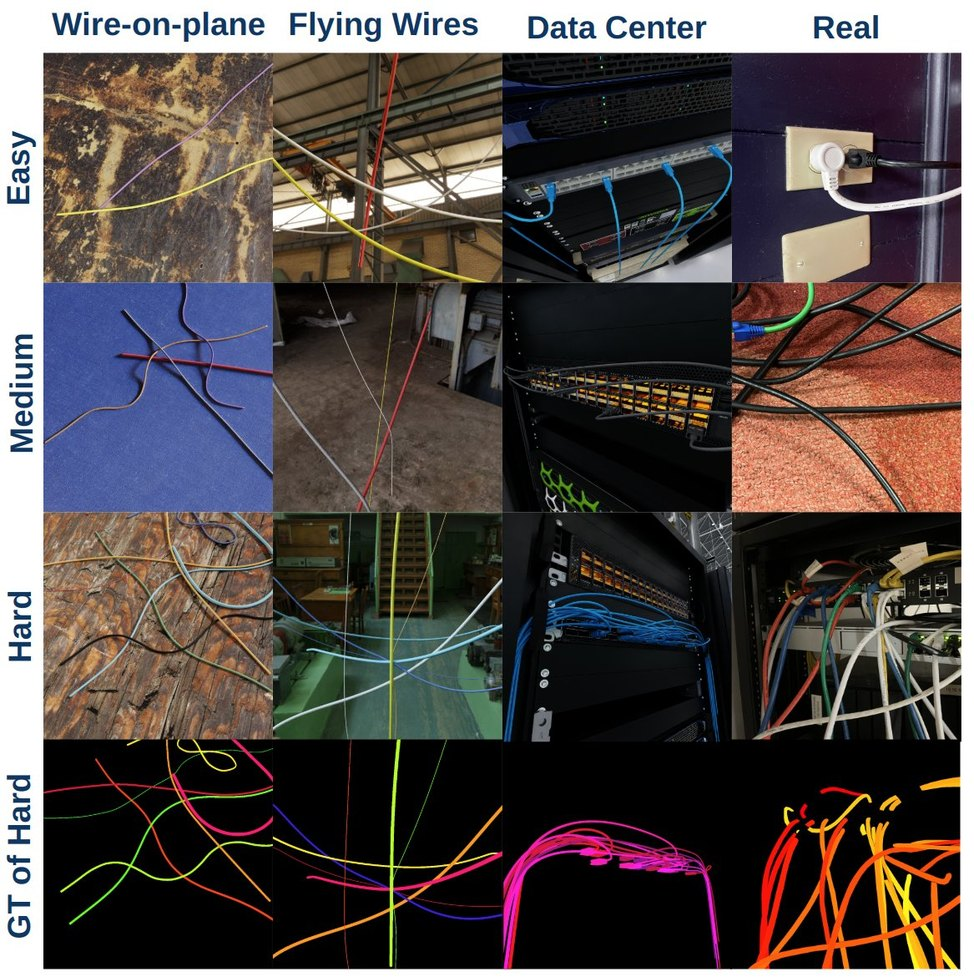
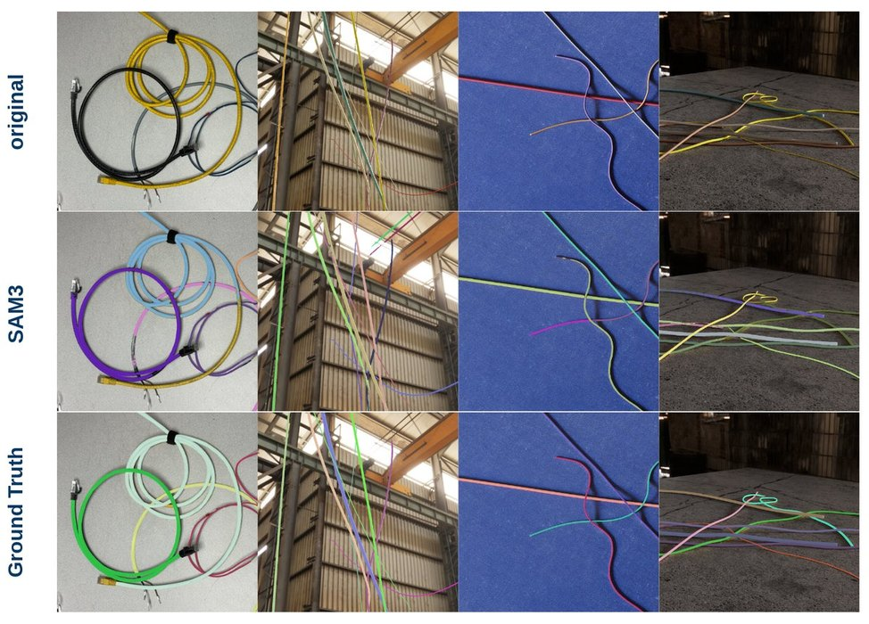
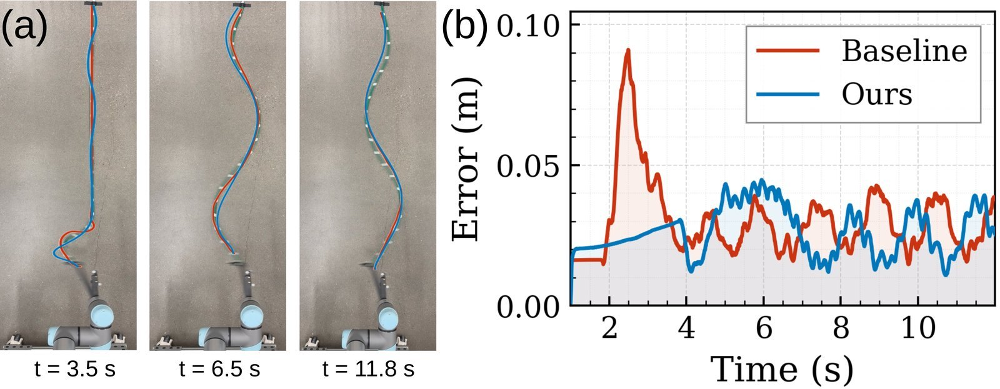
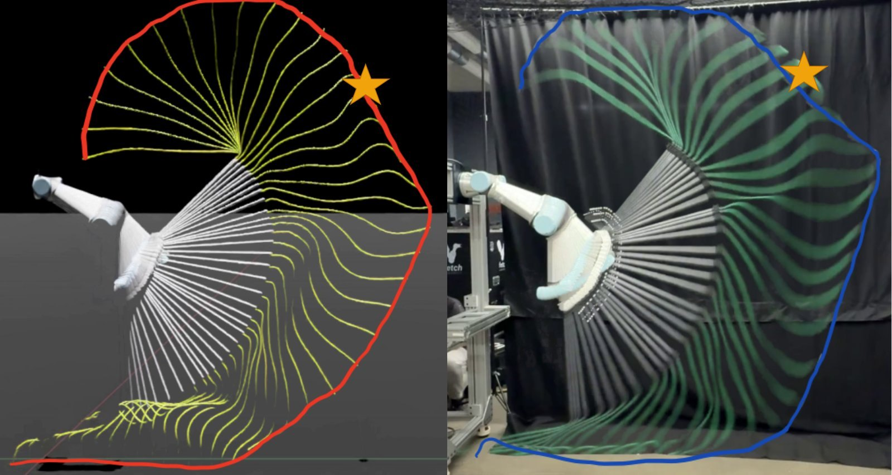
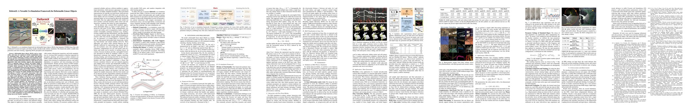

Mesh Skinning
Maps discrete Cosserat rod deformation onto CAD models for high-fidelity visualization.
A Versatile Co-Simulation Framework for Deformable Linear Objects
1The Robotics Institute, Carnegie Mellon University
2Department of Mechanical Engineering, Carnegie Mellon University
3School of Ocean and Civil Engineering, Shanghai Jiao Tong University
4Zhiyuan College, Shanghai Jiao Tong University
5Harvard University
* Equal contribution

Simulating deformable linear objects such as wires, cables, and ropes with both visual realism and physical accuracy remains a significant challenge. DeformX integrates a Cosserat rod physics engine with NVIDIA Isaac Sim, enabling dynamics, self-collisions, and interactions with free-form meshes while using mesh skinning to map rod deformations to CAD models for high-fidelity visualization.

Integrates a Cosserat rod physics engine with NVIDIA Isaac Sim through a multi-rate coupling scheme, bridging principled DLO physics, realistic visualization, and robot-learning-compatible scene authoring in a single pipeline.

Maps discrete Cosserat rod deformation onto CAD models for high-fidelity visualization.

Supports realistic interaction between deformable linear objects and arbitrary meshes.

Provides 32,000 synthetic wire segmentation images with depth and instance masks.

32,000 synthetic images from 300+ simulation runs across Easy, Medium, and Hard tiers in wire-on-plane, flying-wire, and data-center scenes.

Fine-tuning SAM3 on DeformX-generated data yields a 10.2% mAP@75 improvement on real-image wire instance segmentation.

Physics validation with robot-driven rope motion and motion-capture comparison.

Goal-conditioned dynamic rope manipulation in simulation and in the real world.
A rope-swinging hit-target policy trained entirely in DeformX achieves 6.6 cm mean target-hitting error when deployed on a real UR5e robot.
